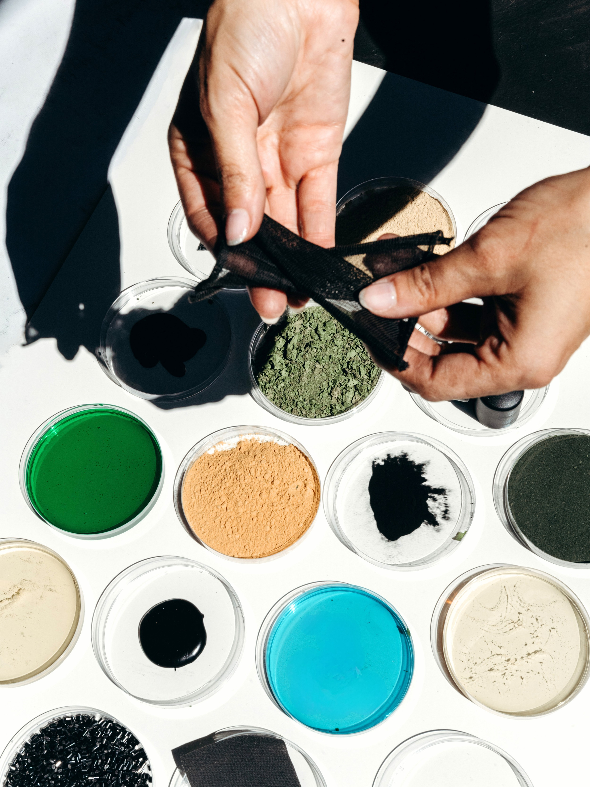

Дизайнер как куратор

Последняя из девяти историй – про время, в котором я пишу это. AI быстро меняет рабочие инструменты, но самые длинные паузы в разговорах с героями случаются, когда речь заходит о смысле этих изменений. Их я и хотела зафиксировать здесь.
AI и кризис идентичности
С массовым распространением генеративных AI (ChatGPT, Anthropic, Midjourney) дизайн-культура сталкивается с кризисом идентичности. Если машина может генерировать интерфейсы, писать копию, создавать визуалы – что делает дизайнер? Ответ кристаллизуется в переопределении роли: дизайнер становится критиком, куратором, стратегом, а не производителем форм.
Это означает, что дизайн-культура переходит от производства к осмыслению. Возникают вопросы: почему это решение? кому оно служит? что мы теряем? какие предположения мы делаем? Этика становится центром, а не периферией.
Этика становится центром, а не периферией.
Скорость и долгосрочность
Дизайн-культура сегодня сталкивается с явным противоречием. С одной стороны находится культура спешки: AI позволяет быстро генерировать варианты, компании хотят быстрых итераций, постоянных тестов, A/B экспериментов. С другой стороны – возврат к медленности: понимание того, что быстро генерированный дизайн деградирует, что design debt накапливается, что пользователи устают от постоянных изменений.
Это напряжение остаётся нерешённым и определяет дизайн-культуру 2025. Как держать оба требования? Как быть быстрым, но тщательным? Как экспериментировать, не теряя консистентности? Вопросы, которые беспокоили дизайнеров почти 100 лет назад, остаются актуальны в новом контексте.
Доступность и устойчивость
Доступный дизайн (Accessible Design) и инклюзивный дизайн (Inclusive Design) перестают быть нишевыми практиками. Они становятся минимальным требованием, встроенным в основу проектирования. Это означает, что в центре работы находится забота о разных пользователях: инвалидах, пожилых людях, детях, людях с разными когнитивными способностями.
Растёт понимание того, что устойчивый дизайн (Sustainable Design) – это не только об экологии. Это об умении создавать системы, которые существуют долго, которые не требуют постоянного переделывания, которые сопротивляются тренду. Прямое возвращение к Рамсу, но в контексте 2025 года: в условиях AI, быстрых циклов, постоянных апдейтов устойчивость становится редкостью и ценностью.
Линии истории сходятся
История дизайн-культуры – это история системного переопределения того, что дизайнер делает, кому он служит и как это служение артикулируется и передаётся. Каждый период вносит своё понимание, но не отменяет предыдущие. Они накладываются, переплетаются, находят новые выражения.
От Баухауса, утверждавшего, что дизайн – это коллективная практика и ритуал, к Ульму, который показал, что это может быть методологией. От американской корпоративной школы, кодирующей ценности в системы, к Рамсу, формализовавшему этику. От Apple, переводившей принципы Рамса в цифру, к Material Design, который вывел эти принципы в публичное пространство. От Spotify, показавшей, как масштабировать культуру через горизонтальные структуры, к Uncommon, переопределившей дизайн как культурное вмешательство.
Сегодня эти линии вновь пересекаются. AI предоставляет инструменты, которые меняют природу работы, но не меняют вопросы: как создавать с честностью? как передавать ценности? Дизайнер, сталкиваясь с машиной, которая может генерировать формы, возвращается к вопросам, которые ставил Баухаус: почему это вообще нужно создавать?
Фрагментированность дизайн-культуры возникает не из отсутствия информации. Она возникает из отсутствия единой рамки для осмысления. Эти девять историй – попытка такую рамку наметить. Рядом с двадцатью одним голосом современных героев они должны напомнить: за каждым словом про культуру в студии или продукте стоит столетняя традиция размышления о том, что дизайнер делает и почему.
Дизайнер переопределяется как специалист, который задаёт правильные вопросы, а не тот, кто создаёт правильные ответы.
– deFindings